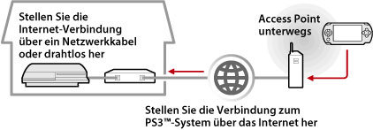
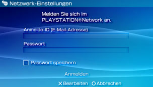

Netzwerk > Verwenden von Remote Play (über Internet)
Verwenden von Remote Play (über Internet)
Wenn Sie diese Funktion nutzen wollen, müssen Sie möglicherweise die System-Software des PS3™-Systems und des PSP™-Systems aktualisieren.
Sie können vom PSP™-System aus über einen WLAN Access Point (wie sie z. B. von kommerziellen WLAN-Hotspot-Diensten angeboten werden) eine Verbindung zum Internet aufbauen und darüber eine Verbindung mit dem PS3™-System zuhause herstellen. Wenn Sie Remote Play unterwegs verwenden wollen, muss das PS3™-System in den Bereitschaftsmodus für die Remote Play-Verbindung geschaltet sein.

Anmerkung
Die Verwendung eines kommerziellen WLAN-Hotspot-Dienstes und die Tarife sind providerabhängig. Kontaktieren Sie Ihren Service Provider für weitere Informationen.
Vorbereitung (1) (PS3™- und PSP™-System)
Wenn Sie Remote Play zum ersten Mal verwenden, müssen Sie das PSP™ System mit dem PS3™ System registrieren (Paar). Registrieren Sie das System unter  (Einstellungen) >
(Einstellungen) >  (Remote-Play-Einstellungen) > [Gerät registrieren].
(Remote-Play-Einstellungen) > [Gerät registrieren].
Vorbereitung (2) (PS3™-System)
Schalten Sie das PS3™-System in den Bereitschaftsmodus. Sie müssen [Remote Start] auf [Ein] setzen, so dass Sie das PS3™-System vom PSP™-System aus einschalten können.
1. |
Führen Sie am PS3™-System folgende Schritte aus:
|
|---|---|
2. |
Schalten Sie das PS3™-System aus. |
 (Benutzer) ein.
(Benutzer) ein. (System ausschalten), um das System auszuschalten und in den Bereitschaftsmodus zu wechseln. Vergewissern Sie sich, dass die Power-Kontroll-Leuchte rot leuchtet.
(System ausschalten), um das System auszuschalten und in den Bereitschaftsmodus zu wechseln. Vergewissern Sie sich, dass die Power-Kontroll-Leuchte rot leuchtet.Anmerkung
Einzelheiten zu den in Schritt 1 aufgeführten Einstellungen finden Sie unter (Einstellungen) > (Remote-Play-Einstellungen) > [Remote Start] in diesem Handbuch.
Vorbereitung (3) (PSP™-System)
Erstellen Sie eine Netzwerkverbindung, um das PSP™-System mit einem Access Point zu verbinden. Um Remote Play über das Internet zu verwenden, können Sie einen Acces Point eines kommerziellen WLAN-Hotspot-Dienstes verwenden. Einzelheiten hierzu finden Sie im Benutzerhandbuch zum PSP™-System.
Verwenden von Remote Play
1. |
Wählen Sie am PSP™-System |
|---|---|
2. |
Wählen Sie [Verbindung über das Internet]. |
3. |
Wählen Sie aus der Verbindungsliste die Verbindung für den Access Point für Remote Play. |
4. |
Geben Sie die Anmelde-ID von PlayStation®Network und das Passwort für das verwendete Konto ein.  Wenn die Verbindung erfolgreich zustande kam, wird der Bildschirm vom PS3™-System auf dem PSP™-System angezeigt. |
 (Netzwerk) >
(Netzwerk) >  (Remote Play).
(Remote Play).Verlassen von Remote Play
Drücken Sie die PS-Taste (HOME-Taste) am PSP™-System und wählen Sie [Remote-Play verlassen] > [Beenden und das PS3™-System ausschalten].
Anmerkung
Wählen Sie [Beenden ohne Ausschalten des PS3™-Systems], wenn am PS3™-System gerade Vorgänge wie das Kopieren von Dateien oder das Herunterladen im Hintergrund oder andere Funktionen ausgeführt werden, für die das System eingeschaltet bleiben muss.
Verwenden von Remote Play über Internet
Sie können möglicherweise Remote Play über Internet abhängig vom verwendeten Netzwerk nicht verwenden. Ist dies der Fall die folgenden Informationen prüfen.
- Verwenden Sie [Internetverbindungs-Test] in
 (Netzwerk-Einstellungen) unter (Einstellungen), um zu prüfen, ob das PSP™ System eine Verbindung mit dem Internet und PlayStation®Network aufbauen kann.
(Netzwerk-Einstellungen) unter (Einstellungen), um zu prüfen, ob das PSP™ System eine Verbindung mit dem Internet und PlayStation®Network aufbauen kann. - Falls der Router UPnP unterstützt, die UPnP-Funktion des Routers aktivieren.
- Falls der Router UPnP nicht unterstützt, müssen Sie den Port des Routers vorsetzen, damit eine Internetverbindung zum PS3™-System möglich ist. Die Portnummer für Remote Play ist TCP:9293. Information über Einrichten dieser Option finden Sie in den Router-Anweisungen.
- Mit der Funktion „Vorsetzen“ werden Signale an einem bestimmten Port (Eingang) zu einem anderen Port (Ausgang) weitergeleitet. Dies wird auch als „Port-Mapping“ und „Adresskonvertierung“ bezeichnet.
- Wenn das PS3™-System über zwei oder mehr Router mit dem Internet verbunden ist, funktioniert die Kommunikation möglicherweise nicht richtig.
Anmerkungen
- Ein Router ist ein Gerät, das mehreren Geräten die gemeinsame Nutzung einer einzigen Internet-Leitung ermöglicht.
- Verbindungen können je nach den Sicherheitseinstellungen des Routers und des Internet-Serviceproviders beschränkt sein. Schlagen Sie dazu in den mit dem verwendeten Netzwerkgerät gelieferten Anweisungen und in den Informationen von Ihrem Internet-Serviceprovider nach.